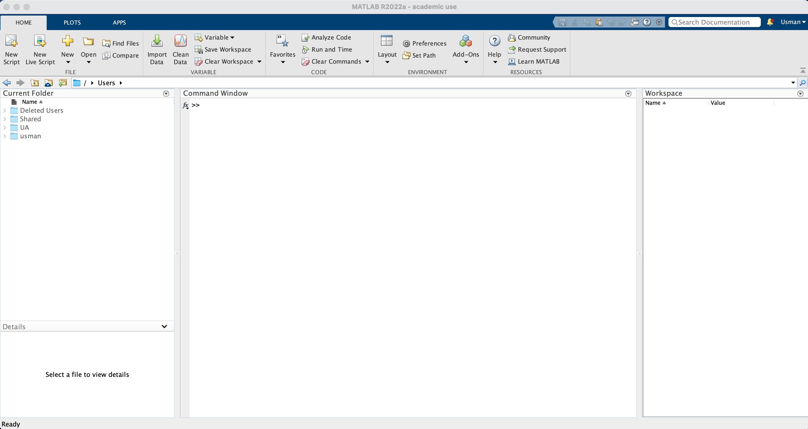
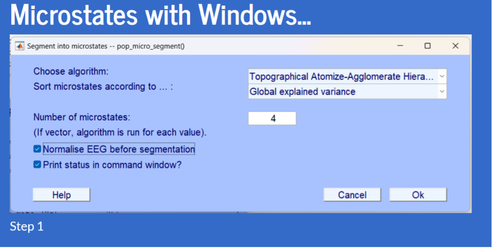
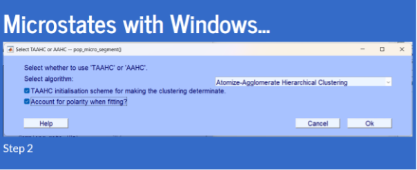

This is work under progress and more information will be added.
Collecting EEG data
EEG data can be collected using a variety of EEG headset tools and software. We are using a mobile, gel-based, 32 channel headset, Ant Neuro EEGO Sports.
EEG Headset Technical details
- Brand: Ant Neuro EEGO Sports 32 (ES-230)
- Amplifier: 32-channel EEGO amplifier, 2 kHz, CE Class IIa medical device
- Reference: online referencing with CPz
- Ground electrode: AFz
- Resolution: 24-bit
- EEG Cap: Waveguard – sizes M, and L
- Sampling rate: upto 2048 Hz
- Software: EEGO software for recording, reviewing, and export EEG data
Data acquisition
1. Creating a new subject
2. Placing EEG headset
3. Checking Impedance
4. EEG Recording
5. Exporting EEG data
Data processing and analysis
A variety of software are available for EEG data processing and analysis. The widely used licensed programme is MATALB (stands for matrix laboratory). It is primarily a statistical and machine learning programme and can be used for EEG data processing in two ways: via command line or via a freely available toolbox EEGLab.

There are many alternative. A famous free programme is Python – whereas the relevant library is called MNE.
We primarily use EEGLab in PSYC480, that shall be installed as an MATLAB add-on.
Installing EEGLab Toolbox
- Use the latest versions of MATLAB and EEGLab.
- Unzip EEGLab and
Microstates1.21, and pasteMicrostates1.2insideEEGLab -> plugins. - Make sure that you do not have any extra - old copies of the software on your computer.
- From MATLAB
Hometab, clickPreferences -> Add-Onsand click on three dots beside the installation folder path (see Figure 1). This shows you the folder where MATLAB has been installed. If you see aMATLAB Add-Onsfolder withinMathworks, then EEGLab (unzipped) should be pasted here and deleted from all other places on your computer. If such a folder does not exist, create a new folder and name itMATLAB Add-Ons, then paste the EEGLab folder here. Creating this folder should not be problematics as described here. - From MATLAB
Hometab, clickSet Path -> Default. This deletes all old paths. Once the process completes, clickSave. Then, clickAdd with Subfoldersand find the path to EEGLab folder based on point 4, then clickSave. - Type
eeglabin MATLABCommand Windowand EEGLab shall open.
EEGLab fig tba.
How to create a study
(Used to process multiple datasets at once)
- Load in datasets
- File -> Create Study -> Using all loaded datasets
How to remove non-EEG channels
- Edit -> Select Data -> Tick the box on the same line as channel range and then click on the “…” box to select the channels to remove (how do you know how to remove the channels? I wish I knew)
How to compute the average reference for microstate analysis
- Tools -> Basic FIR filter -> Set lower edge to 2 and upper edge to 20 and run
How to run artifact correction (ASR)
- Tools -> Reject data using clean rawdata and ASR
- Tick the “Remove channel drift” box and change the values to 0.75 and 1.25 (Why? IDK)
- Uncheck the “Remove channel if it is flat for more than …” box
- Change the min acceptable correlation with nearby chans from 0.8 to 0.7
Apparently we now average reference again, but this time we also interpolate removed channels
How to run ICA with Picard
- Tools -> Decompose data by ICA
- Change from “runica” to “picard”
- Uncheck the reorder components by variance box
- After that is finished, go back to Tools -> Classify components using ICLabel-> label components (leave as default) and run
- Then Tools -> Classify components using ICLabel-> Flag components as artifacts
- Then Tools -> remove components from data
How to actually run microstate analysis (Windows edition)
- Tools -> Microstate analysis toolbox -> select data for microstate analysis
- Change ERP – Concatenate datasets to Spontaneous GFP Peaks
- Tools -> Microstate analysis toolbox -> Segment into microstates
- Copy this (Shamelessly stolen from Usman’s slides)

- Copy this

You should be able to plot them after doing this.
Resting EEG Microstates
EEG data processing (as described above) has historically been recommended by many experts. However, recent research shows that the EEG data processing (or over-processing) could be counterproductive. Therefore, it is sensible to process the data to only the extent that is needed to obtain microstates that resemble the prototypical four network types. To the best of my knowledge, it is important to use only the following processing steps:
- Channel locations
- Filter 2-20 Hz
- Remove artefacts with ASR, but make sure to un-check the option
Remove channel if it is flat for more than (seconds), see Figure 2. - Reference to average and interpolate removed channels.
- From
Tools -> Microstates -> Obtain Microstate Maps, usek-meansmethod with a min of 4 and max of 5 maps, and setrestartsto 20. - From
Plots ->… - Examine whether or not your obtained microstates resemble the prototypical four network types (see Figure 3) (Nash et al. 2022).
EEG Headset maintenance and cleaning
References
Footnotes
Microstates is not primarily needed for EEGLab. We install it because it will be used for acquiring resting EEG microstate plots and relevant statistics.↩︎